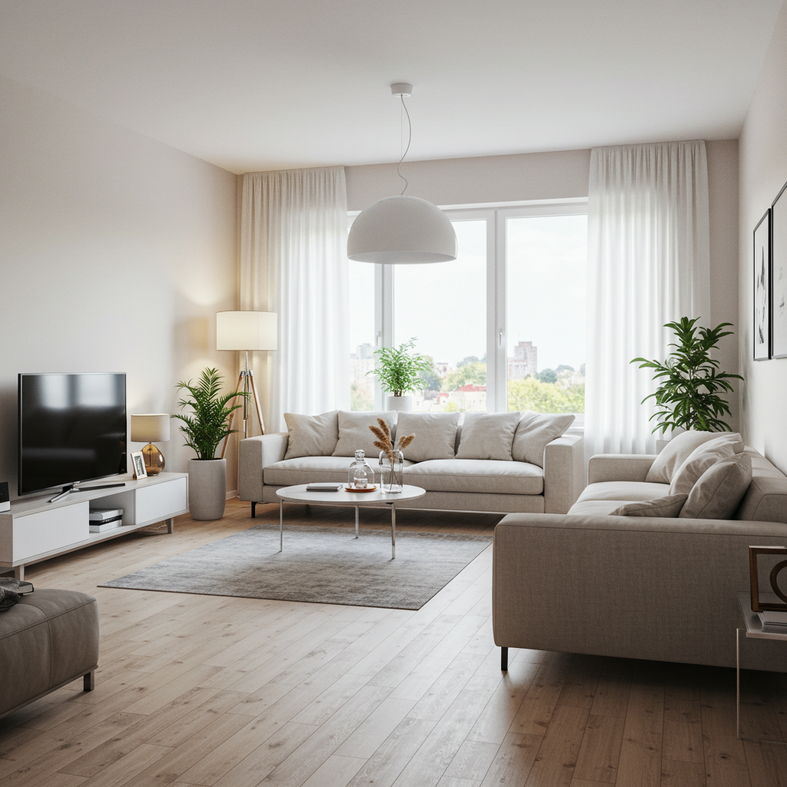
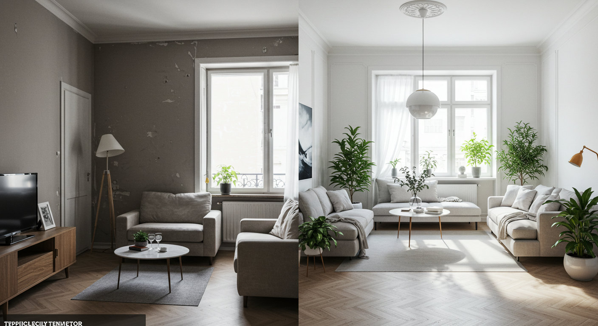
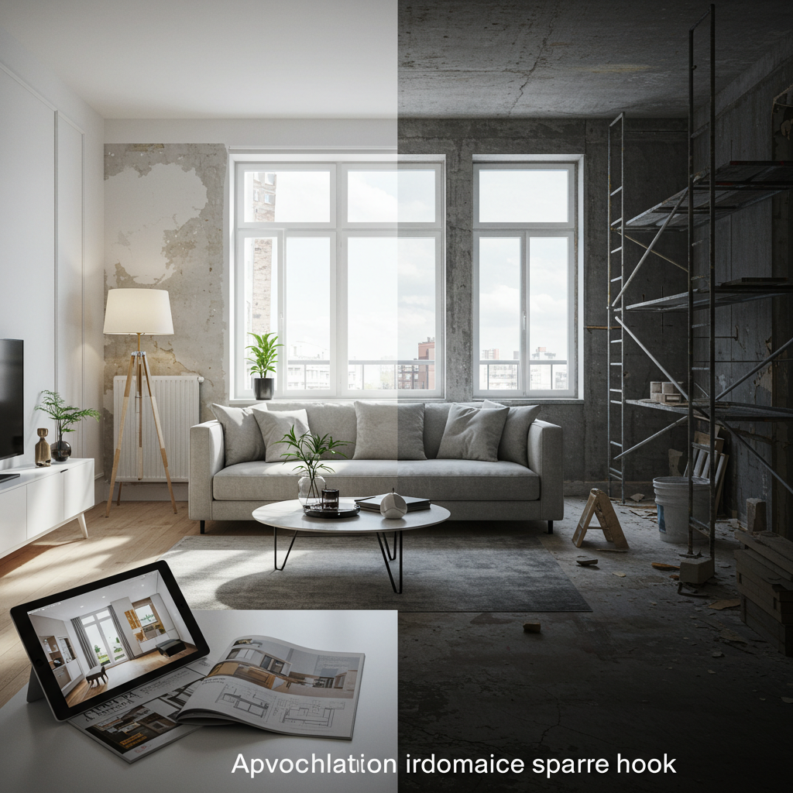
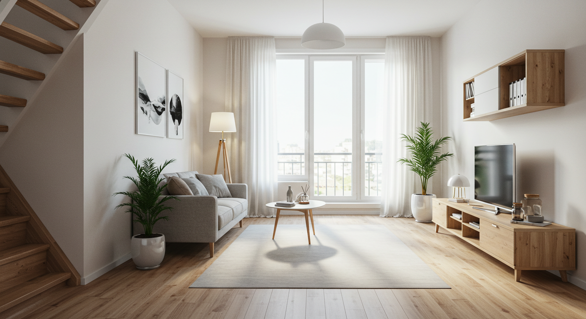
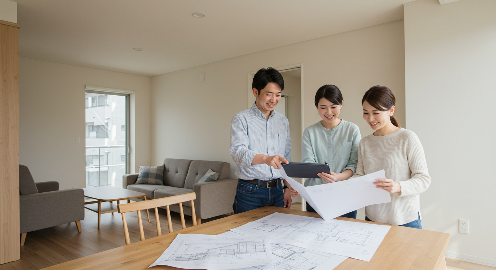
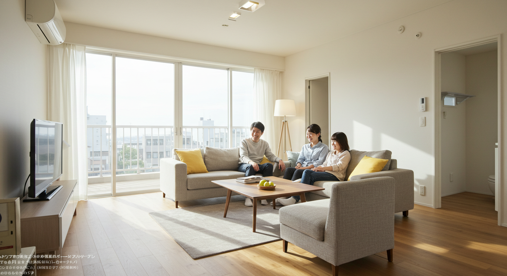

マンションリフォームとリノベーション！理想を叶える選択ガイド

導入

毎日を過ごす大切な場所、住まい。特にマンションは、利便性の高い立地や充実した共用施設、セキュリティの高さなど、多くの魅力にあふれています。しかし、どんなに快適な住まいでも、年月が経つにつれて少しずつ変化していくものです。壁紙が色褪せたり、キッチンや浴室の設備が古くなったり。あるいは、家族が増えたり、子どもが独立したりと、私たちのライフスタイルそのものが変化し、今の間取りが少し窮屈に感じられることもあるでしょう。
「この壁紙、そろそろ新しくしたいな」
「もっと使いやすいキッチンだったら、料理も楽しくなるのに」
「子ども部屋を夫婦の趣味のスペースに変えられたら素敵だな」
そんな風に、今の住まいに対して「もっとこうだったらいいのに」という想いを抱いたことはありませんか？その想いを実現し、暮らしをより豊かで快適なものへと変えるための強力な選択肢が、「リフォーム」と「リノベーション」です。
この二つの言葉、耳にする機会は多いものの、その違いを正確に説明できる方は意外と少ないかもしれません。「なんとなく、リノベーションの方が大掛かりな工事？」といったイメージをお持ちの方もいらっしゃるでしょう。そのイメージは、決して間違いではありません。しかし、どちらを選ぶかによって、実現できること、費用、そして工事にかかる時間も大きく変わってきます。
大切なのは、ご自身の「こうしたい」という想いや目的、そして予算に合わせて、最適な方法を選ぶことです。部分的な修繕で満足できるのか、それとも間取りから見直して理想の空間をゼロから創り上げたいのか。その選択が、これからの暮らしの質を大きく左右します。
この記事では、マンションの住まいづくりを考えているあなたのために、リフォームとリノベーションの基本的な違いから、それぞれのメリット・デメリット、気になる費用相場、そして何よりも大切な「失敗しないための計画の進め方」や「信頼できる業者選びのコツ」まで、一つひとつ丁寧に、そして分かりやすく解説していきます。
専門的な内容も、できるだけ身近な例を交えながら、まるで隣で専門家が優しくアドバイスしてくれるような、そんな親しみやすい雰囲気でお届けします。この記事を読み終える頃には、漠然としていたあなたの理想が具体的な計画へと変わり、理想の住まいを実現するための確かな一歩を踏み出せるようになっているはずです。
さあ、あなただけの理想の住まいづくりへ向けて、一緒に旅を始めましょう。
リフォームとリノベーションの違いを徹底解説

住まいの改修を考え始めたとき、最初に出会うのが「リフォーム」と「リノベーション」という二つの言葉です。これらは似ているようで、実はその目的や工事の規模に大きな違いがあります。この違いを正しく理解することが、理想の住まいづくりを成功させるための最初の、そして最も重要なステップです。ここでは、それぞれの言葉の定義から、具体的な内容、そしてあなたの希望に合うのはどちらなのかを判断するための比較ポイントまで、じっくりと解説していきます。
リフォームとは？定義と主な内容
まず、「リフォーム（Reform）」について考えてみましょう。この言葉は、「re（再び）」と「form（形作る）」という二つの単語から成り立っています。その語源が示す通り、リフォームの基本的な考え方は「老朽化したり、汚れたり、壊れたりした部分を、元の状態に戻すこと」です。つまり、マイナスの状態をゼロの状態に回復させる、原状回復や修繕、部分的な改修を指すのが一般的です。
もちろん、単に元に戻すだけでなく、新しい設備に入れ替えることで、機能性を向上させることもリフォームに含まれます。例えば、古くなったキッチンを最新のシステムキッチンに交換すれば、使い勝手は格段に良くなります。これは、元の状態以上に性能を高める「アップグレード」の側面も持っていますが、空間全体の骨格や間取りを変えるのではなく、あくまで部分的な改修に留まるのが特徴です。
【リフォームの主な工事内容】
-
内装の改修
- 壁紙（クロス）の張り替え
- 床材（フローリング、クッションフロア、カーペットなど）の張り替え
- 畳の表替えや新調
-
住宅設備の交換
- システムキッチンの交換
- ユニットバスの交換
- トイレ（便器・便座）の交換
- 洗面化粧台の交換
- 給湯器の交換
-
部分的な修繕・改良
- 建具（ドア、ふすま、障子など）の交換や修理
- 外壁や屋根の塗装、修繕（※マンションの場合は共用部のため管理組合の許可が必要な範囲）
- 手すりの設置などのバリアフリー化工事
- 内窓の設置による断熱性・防音性の向上
【リフォームはこんな方におすすめ】
- 「古くなったキッチンだけを新しくしたい」
- 「お風呂を最新のユニットバスに交換して快適にしたい」
- 「子ども部屋の壁紙と床をきれいにしたい」
- 「今の間取りは気に入っているが、内装を一新して気分を変えたい」
- 「なるべく費用と時間をかけずに、住まいの気になる部分を改善したい」
このように、リフォームは比較的規模が小さく、工期も短く、費用も抑えやすいという特徴があります。住みながら工事を進められるケースも多いため、生活への影響を最小限にしたい方にも適しています。今の住まいの間取りや基本的な構造には満足していて、部分的な不満や老朽化を解消したい場合に最適な選択肢と言えるでしょう。
リノベーションとは？定義と主な内容
次に、「リノベーション（Renovation）」です。この言葉は、「re（再び）」と「innovation（革新）」を組み合わせたものです。その意味は「刷新、修復、革新」。リフォームがマイナスをゼロに戻すイメージであるのに対し、リノベーションは、既存の建物に大規模な工事を行い、現代のライフスタイルに合わせて間取りや内外装を刷新し、新たな価値を付け加えることを目的とします。つまり、ゼロの状態からプラスαの価値を創造する、という考え方です。
リノベーションの最大の特徴は、その設計の自由度の高さにあります。例えば、細かく仕切られていた部屋の壁を取り払って、広々とした一つのリビング・ダイニング・キッチン（LDK）にしたり、逆に広い部屋を二つに分けて子ども部屋を新設したり。ライフスタイルの変化に合わせて、住まいの骨格から見直すことができるのです。
また、見た目だけでなく、住まいの性能そのものを向上させることができるのもリノベーションの大きな魅力です。壁や床をすべて取り払う「スケルトンリノベーション」を行えば、普段は見えない配管や配線、断熱材などもすべて新しくすることができます。これにより、断熱性や防音性、耐震性といった住宅の基本性能を根本から改善し、新築同様、あるいはそれ以上の快適な住環境を手に入れることも可能です。
【リノベーションの主な工事内容】
-
間取りの変更
- 間仕切り壁の撤去・新設（例：3LDKを広い1LDKに変更）
- 和室を洋室に変更し、リビングと一体化
- 水回り（キッチン、浴室、トイレ）の位置を移動
- ウォークインクローゼットや書斎など、新たなスペースの創出
-
内装デザインの一新
- 床、壁、天井のデザインをトータルコーディネート
- 造作家具の設置
- 照明計画の見直し
-
住宅性能の向上
- 床・壁・天井への断熱材の追加・交換
- サッシや窓ガラスを断熱性・防音性の高いものに交換
- 給排水管、ガス管、電気配線などのインフラの全面的更新
- 構造躯体の補強（※マンションの構造による制限あり）
【リノベーションはこんな方におすすめ】
- 「家族構成が変わったので、今の間取りが合わなくなってきた」
- 「中古マンションを購入して、自分たちの理想の空間をゼロから作りたい」
- 「壁を取り払って、開放的な大空間LDKを実現したい」
- 「デザインにこだわって、カフェのようなおしゃれな家にしたい」
- 「冬は寒く、夏は暑い家を、断熱性能を高めて快適にしたい」
リノベーションは、大規模な工事となるため、リフォームに比べて費用も工期もかかります。設計段階からじっくりと時間をかけ、仮住まいが必要になるケースがほとんどです。しかし、その分、既存の枠にとらわれない自由な発想で、まさに「自分だけのオーダーメイドの住まい」を実現できるという、何物にも代えがたい魅力があります。
あなたのマンションに合うのはどっち？比較ポイント
リフォームとリノベーション、それぞれの特徴が見えてきたところで、改めて両者を比較してみましょう。どちらがあなたの希望に合っているかを判断するためのポイントを、以下の表にまとめました。
| 比較項目 | リフォーム | リノベーション |
|---|---|---|
| 目的 | 原状回復・部分的な機能向上 （マイナスをゼロへ） |
価値の創造・性能の向上 （ゼロからプラスαへ） |
| 工事規模 | 小規模〜中規模（部分的な改修） | 大規模（全体的な改修） |
| 間取り変更 | 基本的に行わない | 伴うことが多い |
| 設計自由度 | 低い（既存の枠組みの中での改修） | 高い（自由な空間設計が可能） |
| 費用 | 比較的安価（数十万〜数百万円） | 比較的高価（数百万〜数千万円） |
| 工期 | 短い（数日〜数週間） | 長い（数ヶ月〜1年以上） |
| 仮住まい | 不要な場合が多い | 必要な場合が多い |
| 主な対象 | 設備の老朽化、内装の汚れなど | 間取りの不満、性能への不満、デザインの一新 |
この表を見ながら、ご自身の状況を振り返ってみましょう。
【チェックリストで考えてみよう】
-
住まいへの不満は「部分的」ですか？それとも「全体的」ですか？
- 「キッチンが古い」「壁紙が汚れている」など、ピンポイントの不満であればリフォームが向いています。
- 「間取りが使いにくい」「家全体が暗い」「冬が寒い」など、根本的な問題であればリノベーションを検討する価値があります。
-
最も重視するのは「コストや手軽さ」ですか？それとも「理想の実現」ですか？
- 予算を抑え、今の生活への影響を少なくしたいならリフォームです。
- 費用や時間がかかっても、ライフスタイルに合った理想の空間を手に入れたいならリノベーションです。
-
今の家の「間取り」は気に入っていますか？
- 「はい」であれば、内装や設備を新しくするリフォームで十分満足できる可能性が高いです。
- 「いいえ」であれば、間取り変更が可能なリノベーションが唯一の解決策かもしれません。
もちろん、この二つは明確に分けられるものではなく、その境界は曖昧な場合もあります。例えば、「LDKの内装とキッチンを全面的に新しくし、隣の和室との間の壁を取り払ってリビングを広げる」といった工事は、リフォームとリノベーション両方の要素を含んでいると言えます。
大切なのは、言葉の定義にこだわることではありません。あなた自身が「住まいをどう変えたいのか」という目的を明確にし、その目的を達成するためにはどのような工事が必要なのかを考えることです。その上で、業者に相談する際には、「リフォームをしたい」「リノベーションをしたい」という言葉だけでなく、「こんな暮らしがしたい」「この不満を解消したい」という具体的な想いを伝えることが、理想の住まいづくりへの第一歩となるのです。
マンションリフォームのメリット・デメリット

今の住まいの気になる部分だけを、手軽に、そして効率的に改善できるマンションリフォーム。その魅力と、一方で知っておくべき注意点について、深く掘り下げていきましょう。リフォームを選ぶことが、あなたの暮らしにどのようなプラスの変化をもたらすのか、そしてどんな点に気をつけるべきなのかを具体的に見ていきます。
リフォームを選ぶメリット
リフォームには、リノベーションにはない身近さや手軽さといった、多くのメリットがあります。ここでは、その代表的な4つのメリットをご紹介します。
1. 費用を抑えやすい
リフォーム最大のメリットは、何と言っても費用をコントロールしやすい点にあります。工事の範囲を「キッチンだけ」「浴室と洗面所だけ」というように限定できるため、予算に合わせて計画を立てることが可能です。リノベーションのように家全体に手を入れるわけではないので、工事費はもちろん、設計料や諸経費も比較的安価に収まります。
例えば、「本当は家全体をきれいにしたいけれど、今は予算が限られている」という場合でも、「今回は一番気になる水回りだけをリフォームして、数年後にリビングの内装を」というように、段階的に住まいをアップグレードしていくことができます。このように、ライフプランや資金計画に合わせて柔軟に対応できるのは、リフォームならではの大きな強みです。限られた予算の中で、最大限の満足感を得たいと考える方にとって、リフォームは非常に現実的で賢い選択と言えるでしょう。
2. 工期が短く、生活への影響が少ない
工事の規模が小さいリフォームは、工期が短いのも大きな魅力です。例えば、トイレの交換なら半日～1日、ユニットバスの交換でも3日～5日程度で完了することがほとんどです。壁紙の張り替えなども、一部屋であれば1～2日で終わります。
工期が短いということは、それだけ普段の生活への影響が少ないということです。多くの場合、住みながら工事を進めることが可能で、大掛かりな引っ越しや仮住まいの手配をする必要がありません。工事中は多少の音や人の出入りはありますが、仮住まいの家賃や引っ越し費用といった追加の出費がかからないのは、経済的にも精神的にも大きなメリットです。仕事や子育てで忙しい毎日を送る中で、できるだけ生活リズムを崩さずに住環境を改善したいと考える方には、リフォームが最適です。
3. 気軽に決断し、始めやすい
「家全体の間取りを変える」となると、家族構成の将来像や長期的なライフプランまで考える必要があり、決断には相当な覚悟とエネルギーが必要です。しかし、「古くなった給湯器を交換する」「日当たりの悪い部屋の壁紙を明るい色に張り替える」といった部分的なリフォームであれば、もっと気軽に決断することができます。
日々の暮らしの中で感じる「ちょっとした不便」や「ささやかな不満」を解消するために、思い立ったらすぐに計画を立てて実行に移せるフットワークの軽さがリフォームにはあります。この「気軽に始められる」という心理的なハードルの低さは、住まいを常に快適な状態に保つ上で非常に重要です. 小さな改善を積み重ねていくことで、大きな満足感に繋がり、住まいへの愛着もより一層深まっていくことでしょう。
4. 部分的な機能性・快適性をピンポイントで向上できる
リフォームは、特定の場所の機能性を集中的に高めるのに非常に効果的です。例えば、冬場の寒さが厳しい浴室を、最新の断熱浴槽と浴室暖房乾燥機付きのユニットバスに交換するとしましょう。これにより、ヒートショックのリスクが軽減されるだけでなく、雨の日の洗濯物も乾かせるようになり、暮らしの質は劇的に向上します。
また、キッチンのコンロをガスからIHクッキングヒーターに交換すれば、掃除が楽になり、火を使わない安心感も得られます。リビングの窓に内窓（二重サッシ）を設置すれば、断熱性が高まって冷暖房の効きが良くなるだけでなく、外の騒音をシャットアウトして静かな環境を手に入れることもできます。
このように、リフォームは「悩み」と「解決策」が直結しやすいのが特徴です。家全体の性能を上げるリノベーションとは異なり、特定の悩みをピンポイントで、かつ効果的に解決できる手段なのです。
リフォームの注意点とデメリット
手軽でメリットの多いリフォームですが、もちろん良いことばかりではありません。計画を進める前に、その注意点やデメリットもしっかりと理解しておくことが、後悔しないための鍵となります。
1. デザインの統一感が損なわれる可能性がある
部分的なリフォームで最も注意したいのが、新しくした部分と既存の部分とのデザインの調和です。例えば、リビングの床だけを最新の無垢材フローリングに張り替えたとします。床はとても素敵になったものの、既存の壁紙やドアの色と合わず、新しくした部分だけが浮いて見えてしまう、というケースは少なくありません。
キッチンを交換する際も、新しいキッチンの扉の色と、既存の食器棚やダイニングテーブルとの相性を考えないと、ちぐはぐな印象の空間になってしまいます。リフォームを行う際は、改修する部分単体で考えるのではなく、部屋全体、ひいては家全体のインテリアとのバランスを常に意識することが重要です。カタログの色見本だけでなく、できるだけ大きなサンプルを取り寄せて、実際の部屋の光の下で既存部分と見比べてみることが失敗を防ぐコツです。
2. 構造的な問題や根本的な不満は解決できない
リフォームは、あくまで表面的な改修が中心です。そのため、住まいの根本的な問題点を解決することはできません。
例えば、「部屋が細かく仕切られていて使いにくい」「リビングが狭くて暗い」といった間取りに関する不満は、リフォームでは解消できません。また、「冬、足元から冷気が上がってきて寒い」という悩みも、床材を張り替えるだけでは根本的な解決にはならず、床下の断熱材から見直すリノベーションが必要になる場合があります。リフォームでできることの限界を正しく理解し、自分の抱える不満がリフォームで本当に解決できるのかを、冷静に見極める必要があります。
3. 壁や床の内部に潜む問題が見過ごされるリスク
リフォームは、壁や床を壊さずに行う工事が多いため、その内部に隠れている問題点に気づけない可能性があります。例えば、壁紙を張り替えるだけでは、壁の内部にある断熱材が劣化していたり、カビが発生していたりしても分かりません。
特に築年数の古いマンションでは、給排水管の老朽化が深刻な問題となっていることがあります。目に見えるキッチンや浴室の設備だけを新しくしても、その下の配管が錆びて詰まりやすくなっていたり、水漏れ寸前だったりする可能性もゼロではありません。もしリフォーム後にそうした内部の問題が発覚した場合、せっかくきれいになった壁や床を再び壊して修理することになり、二重の費用と手間がかかってしまいます。築年数が古いマンションをリフォームする際は、専門家による事前の建物診断（インスペクション）を検討することも一つの手です。
4. 細かいリフォームの繰り返しは、結果的に割高になることも
「今回はキッチン、来年は浴室、その次は内装…」というように、数年おきに細かいリフォームを繰り返していくと、どうなるでしょうか。一回あたりの出費は少なく済みますが、工事のたびに養生費や廃材処分費、業者の経費などがかかります。これらの費用を合計すると、一度にまとめて大規模なリノベーションを行うよりも、トータルの費用はかえって高くなってしまう可能性があります。
もちろん、資金計画の都合上、段階的に進めることが最適な場合もあります。しかし、もし将来的に家全体に手を入れたいという漠然とした希望があるのなら、目先のコストだけでなく、長期的な視点で費用対効果を考えることが重要です。まずは長期的なリフォーム計画を立て、その上で今回の工事範囲をどこまでにするかを決定するというアプローチが、賢い選択と言えるでしょう。
マンションリノベーションのメリット・デメリット

間取りやデザインを自由自在に変更し、住まいの価値そのものを高めることができるリノベーション。それはまるで、自分だけの理想の住まいをオーダーメイドで創り上げるような、夢のある選択肢です。しかし、その大きな魅力の裏には、相応の覚悟と準備が必要となる側面も存在します。ここでは、リノベーションがもたらす素晴らしいメリットと、事前に知っておくべき注意点やデメリットを詳しく見ていきましょう。
リノベーションを選ぶメリット
リノベーションを選ぶ最大の動機は、既存の枠にとらわれない「自由」と、住まいの本質的な価値を高める「性能向上」にあります。
1. 理想の間取りとデザインを自由に実現できる
リノベーションの最大の魅力は、なんといってもその設計自由度の高さです。家族構成やライフスタイル、そしてあなたの「好き」という感性に合わせて、空間をゼロから再構築することができます。
- 開放的な大空間LDK: 細かく仕切られていた壁を取り払い、光と風が通り抜ける、家族が集う広々としたリビング・ダイニング・キッチンを実現する。
- 趣味を楽しむ特別な空間: 子どもが独立して使わなくなった部屋を書斎やアトリエ、シアタールームに作り変える。
- 効率的な家事動線: キッチンの隣にパントリーやランドリールームを設け、料理から洗濯、片付けまでの動線をスムーズにする。
- こだわりのインテリア: カフェのようなブルックリンスタイル、温かみのある北欧スタイル、洗練されたモダンスタイルなど、床材、壁材、照明、造作家具に至るまで、トータルでデザインを追求する。
このように、リノベーションは「今の家に自分たちを合わせる」のではなく、「自分たちの暮らしに家を合わせる」ことを可能にします。それは、単に住まいをきれいにすること以上の、暮らしそのものを豊かにデザインする行為と言えるでしょう。
2. 中古マンションの選択肢が広がり、資産価値を向上できる
「新築マンションは高くて手が出ないけれど、希望のエリアに住みたい」という方にとって、リノベーションは非常に強力な武器になります。なぜなら、「中古マンションを購入してリノベーションする」という選択肢が生まれるからです。
一般的に、中古マンションは新築に比べて価格が安く、立地や周辺環境の良い物件が見つかりやすいというメリットがあります。しかし、「間取りが古い」「内装が好みではない」といった理由で購入をためらうケースも少なくありません。ここでリノベーションを前提に考えれば、たとえ間取りや内装が希望と違っていても、それは問題ではなくなります。重要なのは、建物の管理状態や構造、そして何よりも「立地」です。好立地の築古マンションを割安で購入し、浮いた予算をリノベーション費用に充てることで、新築を購入するよりもコストを抑えながら、理想の立地で理想の住まいを手に入れることが可能になるのです。
さらに、デザイン性や機能性を高めたリノベーションは、物件の資産価値を大きく向上させます。将来的に売却や賃貸に出すことになった場合でも、周辺の同じような築年数の物件と比べて、有利な条件で取引できる可能性が高まります。
3. 断熱・防音など、住宅の基本性能を根本から改善できる
リノベーションは、目に見えるデザインだけでなく、住まいの快適性を左右する「性能」を根本から向上させることができます。特に、壁・床・天井をすべて取り払う「スケルトンリノベーション」では、普段は見ることのできない建物の躯体（骨格）部分まで手を入れることが可能です。
- 断熱性能の向上: 壁や床下に高性能な断熱材を新たに入れたり、窓を断熱性の高い二重サッシや複層ガラスに交換したりすることで、外気の影響を受けにくくなります。これにより、「夏は涼しく、冬は暖かい」快適な室内環境が実現し、冷暖房費の削減、つまり省エネにも繋がります。
- 防音性能の向上: 上階の足音や隣戸の生活音、外の車の音などが気になる場合も、壁や床に遮音材や吸音材を入れることで、静かでプライバシー性の高い空間を作ることができます。
- インフラの一新: 築年数の古いマンションで心配なのが、給排水管やガス管、電気配線といったインフラの老朽化です。スケルトンリノベーションでは、これらをすべて新しいものに交換できるため、漏水や漏電、配管の詰まりといった将来的なトラブルのリスクを大幅に減らすことができます。
このように、リノベーションは、安心して永く快適に暮らすための「土台」から作り直すことができるのです。
リノベーションの注意点とデメリット
大きな可能性を秘めたリノベーションですが、その規模の大きさゆえに、リフォームにはないデメリットや注意すべき点も存在します。これらを事前に把握し、対策を立てることが成功への道筋です。
1. 費用が高額になり、予算管理が重要
間取り変更やインフラの更新を含む大規模な工事となるため、リノベーションの費用はリフォームに比べて高額になります。内装や設備を一新するだけでも数百万円、スケルトンリノベーションとなれば1,000万円を超えることも珍しくありません。
また、工事を進める中で、解体して初めて分かる問題（躯体の予想外の劣化、配管の複雑な配置など）が見つかり、追加の工事費用が発生する可能性もあります。そのため、予算を組む際には、見積もり金額ぴったりではなく、予期せぬ事態に備えて10～20%程度の予備費を見込んでおくことが非常に重要です。どこに費用をかけ、どこでコストを抑えるか、優先順位を明確にした上での慎重な資金計画が求められます。
2. 工期が長く、仮住まいが必要になる
リノベーションは、計画から完成まで長い時間を要します。まず、理想の暮らしをヒアリングし、設計プランを練り上げるまでに数ヶ月。そして、実際の工事期間も、規模によっては3ヶ月から半年以上かかることもあります。
工事期間中は、当然ながらその家に住むことはできません。そのため、仮住まいを見つけて引っ越しをする必要があります。仮住まいの家賃や敷金・礼金、2回分の引っ越し費用など、工事費以外にもまとまった費用がかかることを念頭に置いておかなければなりません。また、仮住まい探しや引っ越しの手続き、現在の住まいの片付けなど、時間的・精神的な負担も大きくなることを覚悟しておく必要があります。
3. マンションの管理規約による制限がある
戸建てと違い、マンションは多くの人が共同で暮らす「集合住宅」です。そのため、リノベーションを行う際には、マンションごとに定められた「管理規約」というルールに従わなければなりません。管理規約では、工事で触れる部分が「専有部分」か「共用部分」かによって、できること・できないことが厳しく定められています。
- 専有部分: 住戸の内部、壁や床、天井の内側など、所有者が個人的に所有し、自由にリノベーションできる範囲。
- 共用部分: 構造躯体（柱、梁、コンクリートの壁など）、窓サッシ、玄関ドア、バルコニーなど、居住者全員で共有する部分。これらは基本的に変更できません。
例えば、「この壁を壊してリビングを広くしたい」と思っても、その壁が建物を支える重要な「構造壁（耐力壁）」であった場合は、撤去することは絶対にできません。また、水回りの移動も、床下の配管スペース（スラブ下の空間）の有無や、排水管の勾配の問題で、移動できる範囲が限られていることが多くあります。
リノベーションを計画する際は、まず第一に管理規約を熟読し、何ができて何ができないのかを正確に把握することが不可欠です。マンションリノベーションの実績が豊富な業者であれば、規約の確認から管理組合への工事申請まで、スムーズにサポートしてくれます。
4. 建物の構造によっても制約を受ける
管理規約だけでなく、マンションそのものの「構造」によっても、リノベーションの自由度は左右されます。マンションの主な構造には、「ラーメン構造」と「壁式構造」の2種類があります。
- ラーメン構造: 柱と梁で建物を支える構造です。室内に柱や梁の出っ張りがありますが、部屋を仕切っている壁は構造上重要ではない「間仕切り壁」であることが多いため、比較的自由に撤去・移動でき、間取り変更の自由度が高いのが特徴です。多くのマンションで採用されています。
- 壁式構造: 柱や梁の代わりに、コンクリートの「壁」で建物を支える構造です。室内に柱型が出ないためスッキリとした空間になりますが、室内の壁そのものが構造体であるため、取り壊すことができません。そのため、間取りの変更には大きな制約があります。主に5階建て以下の低層マンションに多く見られます。
自分たちのマンションがどちらの構造なのかは、設計図面（竣工図）で確認できます。業者に相談する際に、この図面を用意しておくと、より具体的で実現可能なプランの提案を受けやすくなります。
リフォーム・リノベーションの費用相場と予算計画
理想の住まいづくりを現実のものにするためには、夢を描くと同時に、しっかりとした予算計画を立てることが不可欠です。しかし、「一体いくらかかるのだろう？」という費用の問題は、多くの方が抱える最も大きな不安の一つではないでしょうか。ここでは、リフォームやリノベーションにかかる費用の目安から、賢くコストを抑えるためのポイント、そして知っていると得をする補助金や減税制度まで、お金にまつわる話を具体的かつ分かりやすく解説していきます。
箇所別・規模別の費用目安
リフォーム・リノベーションの費用は、工事の範囲、使用する建材や設備のグレード、そして依頼する業者によって大きく変動します。ここに挙げるのはあくまで一般的な目安として、ご自身の計画を立てる際の参考にしてください。
【箇所別リフォームの費用相場】
暮らしの中の「ちょっとした不満」を解消する部分的なリフォームは、比較的費用を把握しやすいのが特徴です。
- キッチン交換: 50万円～150万円
- 費用の差は主にシステムキッチンのグレードによります。I型やL型といった形状、食洗機の有無、扉材の材質、ワークトップの素材（ステンレス、人工大理石など）によって価格が大きく変わります。キッチンの位置を移動する場合は、配管工事などが加わるため費用はさらに上がります。
- 浴室交換（ユニットバス）: 60万円～150万円
- 既存の浴室がユニットバスか、在来工法（タイル貼りなど）かによっても工事費が変わります。浴室暖房乾燥機やミストサウナ、ジェットバスなどのオプション機能を追加すると費用は上がります。
- トイレ交換: 20万円～50万円
- 便器本体の交換だけであれば比較的安価ですが、タンクレストイレへの変更や、手洗いカウンターの新設、壁紙・床材の張り替えを同時に行うと費用は高くなります。和式から洋式への変更は、床の解体なども伴うため30万円以上かかることが一般的です。
- 洗面化粧台交換: 20万円～50万円
- 洗面台の幅や収納のタイプ、鏡の機能（曇り止め、LED照明など）によって価格が変動します。壁紙や床の内装工事を同時に行うかも費用に影響します。
- 壁紙（クロス）の張り替え: 1,000円～1,800円/㎡
- 一般的な6畳の部屋（壁・天井）であれば、5万円～8万円程度が目安です。選ぶ壁紙のグレードや、下地処理の必要性によって単価は変わります。
- フローリングの張り替え: 6万円～15万円（6畳あたり）
- 既存の床の上に新しい床材を重ねて張る「重ね張り（カバー工法）」は安価で工期も短いですが、床が少し高くなります。既存の床を剥がして新しく張る「張り替え」は費用も工期もかかりますが、床下の状態を確認できるメリットがあります。
【規模別リノベーションの費用相場】
家全体に手を入れるリノベーションは、工事の規模によって費用が大きく異なります。平米（㎡）単価で考えるとイメージしやすくなります。一般的に、マンションリノベーションの費用は1㎡あたり10万円～20万円が目安とされています。
- 内装・設備一新（間取り変更なし）: 300万円～800万円（50㎡～70㎡の場合）
- 間取りはそのままに、壁紙、床材、建具といった内装と、キッチン、浴室、トイレなどの住宅設備をすべて新しくするリノベーションです。
- 間取り変更を含むフルリノベーション: 500万円～1,500万円（50㎡～70㎡の場合）
- 上記に加えて、間仕切り壁の撤去・新設など、ライフスタイルに合わせた間取りの変更を行う場合です。工事の規模が大きくなり、設計の打ち合わせにも時間がかかります。
- スケルトンリノベーション: 800万円～2,000万円以上（50㎡～70㎡の場合）
- 床・壁・天井をすべて解体してコンクリートの躯体だけの状態（スケルトン）にし、間取り、内装、設備、配管、配線、断熱材などをすべてゼロから作り直す、最も大規模なリノベーションです。設計の自由度が最も高い分、費用も最も高額になります。
これらの費用には、工事費の他に、設計料、諸経費（現場管理費、廃材処分費など）、消費税などがかかります。また、中古マンションを購入してリノベーションする場合は、物件購入費用＋リノベーション費用＋諸経費の合計額で資金計画を立てる必要があります。
費用を賢く抑えるポイント
限られた予算の中で、できるだけ理想に近い住まいを実現するためには、いくつかの工夫が必要です。闇雲にコストカットするのではなく、賢く費用を抑えるポイントをご紹介します。
1. 「こだわり」に優先順位をつける
まずは、家族でじっくりと話し合い、「絶対に譲れないこと」と「妥協できること」を明確にしましょう。これを「マスト（Must）」「ウォント（Want）」「ベター（Better）」のようにランク付けするのも良い方法です。
例えば、「キッチンは対面式にすることが絶対条件（マスト）」「床は無垢材がいいな（ウォント）」「寝室の壁紙は少しおしゃれなものにできたら嬉しい（ベター）」というように整理します。予算が厳しくなったとき、どこを削るべきかの判断基準が明確になり、後悔のないコストダウンができます。
2. 設備のグレードを柔軟に検討する
キッチンやユニットバスなどの住宅設備は、メーカーやシリーズによって価格が大きく異なります。最上位グレードのものは機能もデザインも魅力的ですが、本当にその機能が必要かを冷静に考えてみましょう。一つ下のグレードでも十分な機能を持っていることも多いですし、複数のメーカーのショールームを訪れて比較検討することで、コストパフォーマンスの高い製品が見つかることもあります。すべての設備をハイグレードにするのではなく、例えば「毎日使うキッチンにはこだわるけれど、あまり使わないゲスト用のトイレは標準グレードにする」といったメリハリをつけるのが賢い方法です。
3. 既存のものを活かす「減築」ならぬ「減工事」の発想
まだ使えるもの、状態の良いものは、無理にすべてを新しくする必要はありません。例えば、ドアやクローゼットの扉などは、交換するのではなく、塗装したり、シートを貼ったりするだけで大きく印象を変えることができます。間取りも、すべての壁を取り払うのではなく、活かせる壁や柱はデザインの一部として取り込むことで、解体費用や造作費用を抑えることができます。
4. シンプルなデザイン・間取りを心掛ける
一般的に、凹凸の多い複雑な間取りや、凝ったデザインの造作家具は、材料費も手間（人件費）もかかり、コストアップの要因になります。できるだけ四角いシンプルな空間をベースに考えることで、工事費用を抑えることができます。シンプルで飽きのこないデザインは、将来の家具選びやインテリアの変更にも柔軟に対応できるというメリットもあります。
5. 複数の業者から相見積もりを取る
これは費用を抑える上で最も重要なポイントの一つです。同じ工事内容でも、業者によって見積もり金額は大きく異なることがあります。最低でも3社程度の業者に相談し、同じ条件で見積もりを依頼しましょう。これにより、その工事の適正な価格帯を把握することができます。ただし、単に金額の安さだけで業者を選んではいけません。見積書の内容が詳細で分かりやすいか、提案内容が魅力的か、担当者との相性は良いかなど、総合的に比較検討することが大切です。
活用したい補助金・減税制度
国や地方自治体は、質の高い住宅を増やすために、特定の条件を満たすリフォーム・リノベーションに対して、様々な支援制度を用意しています。これらを活用すれば、数十万円単位で負担を軽減できる可能性もあります。制度は年度ごとに内容が変わったり、予算が上限に達すると終了したりすることがあるため、常に最新の情報を確認することが重要です。
【主な補助金制度】
- 子育てエコホーム支援事業（旧こどもエコすまい支援事業など）:
- 省エネ改修や、子育て世帯向けの改修（家事負担軽減に資する設備の設置など）に対して補助金が交付されます。開口部の断熱改修（内窓設置など）や、高効率給湯器、節水型トイレの設置などが対象となります。
- 長期優良住宅化リフォーム推進事業:
- 住宅の性能を向上させ、長く良好な状態で使用するためのリフォームに対して、高額な補助金が交付される制度です。耐震性の向上や省エネ対策、劣化対策など、複数の性能向上項目を満たす大規模な改修が対象となります。
- 地方自治体の補助金制度:
- お住まいの市区町村が独自に設けている補助金制度もあります。「三世代同居支援」「バリアフリー改修支援」「省エネ設備導入支援」など、自治体によって様々な制度がありますので、必ず自治体のホームページや窓口で確認してみましょう。
【主な減税制度】
- 住宅ローン減税（リフォーム）:
- 10年以上のローンを組んで一定の要件を満たすリフォームを行った場合、年末のローン残高の0.7%が、最大13年間にわたって所得税から控除される制度です。
- 特定の改修工事に対する所得税の控除（投資型減税）:
- ローンを利用しない場合でも、耐震、バリアフリー、省エネ、三世代同居対応、長期優良住宅化といった特定の改修工事を行った場合、工事費用の一定額がその年の所得税から控除されます。
- 固定資産税の減額措置:
- 耐震、バリアフリー、省エネといった改修工事を行った場合、工事完了の翌年度分の家屋の固定資産税が減額される制度です。
これらの制度は、適用されるための要件が細かく定められており、申請手続きも複雑な場合があります。リフォーム業者の中には、こうした制度の活用に詳しいところも多いので、相談する際に「使える補助金や減税はありますか？」と積極的に質問してみることをお勧めします。
失敗しない！理想を叶える計画と業者選びのコツ

リフォームやリノベーションは、決して安い買い物ではありません。そして、一度工事をしてしまえば、簡単にやり直すことはできません。だからこそ、「こんなはずじゃなかった…」という後悔だけは絶対に避けたいものです。成功と失敗の分かれ道は、事前の「計画」と、二人三脚で歩む「業者選び」にあると言っても過言ではありません。ここでは、理想の住まいを確実に手に入れるための、具体的で実践的なステップとコツを詳しく解説します。
成功へ導く計画の進め方
思い描いた理想を、着実に形にしていくためには、正しい順序で計画を進めることが何よりも大切です。焦らず、一つひとつのステップを丁寧に進めていきましょう。
ステップ1：【現状把握と理想の言語化】なぜ、どう変えたいのかを家族で共有する
すべての始まりは、ここからです。まずは、今の住まいに対する「不満」と「満足」を、家族全員で洗い出してみましょう。
- 不満な点: 「キッチンが狭くて作業しにくい」「収納が少なくて物があふれている」「リビングが暗い」「結露がひどい」など、具体的な問題をリストアップします。
- 満足な点: 「リビングからの眺めが好き」「この柱は思い出があるから残したい」など、気に入っている部分も忘れずに。
- 理想の暮らし: 「週末は友人を招いてホームパーティーがしたい」「家族みんなで料理ができる広いキッチンが欲しい」「趣味の読書に没頭できる静かな書斎が欲しい」など、新しい住まいでどんな暮らしがしたいかを、自由に、具体的に話し合います。
この時、雑誌の切り抜きや、Instagram、Pinterestなどで集めた好きなインテリアの画像をまとめた「イメージブック」を作ると、家族間や後で業者とイメージを共有する際に非常に役立ちます。この段階で、家族の価値観や優先順位をすり合わせておくことが、後の計画をスムーズに進めるための土台となります。
ステップ2：【情報収集と予算策定】現実的な着地点を探る
理想のイメージが固まってきたら、次はお金の話です。
- 情報収集: インターネットでリフォーム・リノベーションの事例をたくさん見て、自分たちの理想に近いものが、大体どのくらいの費用で実現できるのか、相場観を養います。リフォーム会社のウェブサイトや、リノベーション専門誌なども参考になります。
- 予算の決定: 自己資金としていくら用意できるかを確認し、必要であれば住宅ローンの利用を検討します。金融機関のウェブサイトで簡易的なシミュレーションをしてみるのも良いでしょう。物件購入と同時にリノベーションを行う場合は、物件価格とリノベーション費用をまとめて借りられる「リフォーム一体型ローン」が便利です。この時、必ず予備費（総予算の10～20%）を見込んでおくことを忘れないでください。
ステップ3：【業者探しと相談】理想のパートナーを見つける旅の始まり
予算の目処が立ったら、いよいよ業者探しです。インターネット検索、知人からの紹介、リフォーム・リノベーションのプラットフォームサイトなどを活用して、候補となる会社を3～5社程度リストアップします。そして、それぞれの会社にコンタクトを取り、相談会や見学会に参加してみましょう。この段階では、ステップ1でまとめた要望やイメージブックを持参し、「私たちのこの想いを、あなたならどう形にしてくれますか？」というスタンスで相談します。各社の反応や提案の違いを見ることで、自分たちに合う会社が見えてきます。
ステップ4：【プランニングと見積もり比較】提案内容をじっくり吟味する
相談した会社の中から、特に感触の良かった2～3社に、具体的なプランニングと見積もりの作成を依頼します（現地調査が必要になります）。提出されたプランと見積もりは、金額の安さだけで判断してはいけません。
- プラン: 自分たちの要望がきちんと反映されているか？プロならではの、自分たちでは思いつかなかったような魅力的な提案があるか？
- 見積書: 「○○工事一式」のような曖昧な表記がなく、工事項目、使用する建材や設備の単価、数量まで詳細に記載されているか？
- 担当者: こちらの質問に的確に、そして誠実に答えてくれるか？
これらの点を総合的に比較し、最も信頼でき、納得のいく提案をしてくれた会社を、パートナーとして選びます。
ステップ5：【契約と着工準備】最終確認を怠らない
依頼する会社が決まったら、工事請負契約を結びます。契約書にサインする前に、契約書、見積書、設計図面、仕様書（使用する建材や設備の品番が書かれたリスト）の内容を隅々まで確認し、打ち合わせ内容と相違がないか、疑問点はないかを最終チェックします。
また、マンションの場合は、管理組合への工事申請や、近隣住民への挨拶も重要な準備です。これらの段取りについても、業者としっかり打ち合わせをしておきましょう。
ステップ6：【着工から完成、そして引き渡しへ】現場とのコミュニケーションも大切に
工事が始まったら、すべてを業者任せにするのではなく、可能な範囲で現場に顔を出し、進捗状況を確認しましょう。職人さんたちへの感謝の気持ちを伝えることも、良い関係を築き、工事の質を高める上で意外と重要です。もし、途中で疑問や変更したい点が出てきたら、すぐに現場監督や担当者に相談します。
工事が完了したら、引き渡し前に「完了検査（施主検査）」を行います。図面通りに仕上がっているか、傷や汚れはないかなどを自分の目で厳しくチェックし、不具合があれば手直しを依頼します。すべてが完了して初めて、引き渡しとなります。保証書や取扱説明書などを受け取り、アフターサービスの体制についても確認しておきましょう。
信頼できる業者選びのポイント
リフォーム・リノベーションの成否の8割は、業者選びで決まると言っても過言ではありません。数多くの会社の中から、信頼できるパートナーを見つけ出すためのチェックポイントをご紹介します。
1. 実績と専門性：マンション改修の経験は豊富か？
まず確認したいのは、マンションのリフォーム・リノベーションの実績が豊富かどうかです。マンションには、戸建てにはない管理規約や構造上の制約が数多く存在します。これらの複雑なルールを熟知し、様々な制約の中で最適なプランを提案できるノウハウを持っているかどうかは、非常に重要なポイントです。会社のウェブサイトで施工事例を確認し、自分たちが住んでいるようなマンションの事例や、理想とするテイストに近い事例が豊富にあるかを確認しましょう。
2. 担当者との相性：あなたの「想い」を本当に理解してくれるか？
長い期間をかけて一緒に住まいづくりを進めていく担当者との相性は、何よりも大切です。
- ヒアリング力: こちらの話をただ聞くだけでなく、言葉の裏にある潜在的なニーズや、暮らしの価値観まで深く掘り下げて、丁寧に聞き出そうとしてくれるか。
- コミュニケーション能力: 専門用語を多用せず、素人にも分かりやすい言葉で説明してくれるか。レスポンスは迅速で、連絡は密か。
- 誠実さ: メリットだけでなく、デメリットやリスクについても正直に話してくれるか。
複数の会社の担当者と話す中で、「この人になら、安心して大切な住まいづくりを任せられる」と心から思えるかどうかを、自分の感覚を信じて見極めてください。
3. 提案力：期待を超えるプラスαがあるか？
良い業者は、こちらの要望を100%叶えるだけでなく、そこにプロならではの視点を加えた「120%の提案」をしてくれます。例えば、「収納を増やしたい」という要望に対して、ただ収納家具を増やすだけでなく、「壁面を有効活用した見せる収納と、生活感を隠すウォークインクローゼットを組み合わせ、デザイン性と機能性を両立させましょう」といった、暮らしをより豊かにするアイデアを提案してくれるかどうか。自分たちの想像を超えた提案に出会えたら、それは良いパートナーである可能性が高いでしょう。
4. 見積もりの透明性：信頼関係の第一歩
前述の通り、見積書の内容は業者選びの重要な判断材料です。詳細で分かりやすい見積もりを提出してくれる会社は、仕事も丁寧で誠実である傾向があります。逆に、「一式」という表記が多く、何にいくらかかっているのかが不透明な見積書を出す会社は注意が必要です。また、追加工事が発生する可能性について、どのような場合に、どのくらいの費用がかかる可能性があるのかを、事前にきちんと説明してくれるかどうかも、誠実さを見極めるポイントです。
5. 保証・アフターサービス：工事が終わってからが本当のお付き合い
工事が完了すれば終わり、ではありません。万が一、工事後に不具合が発生した場合に、どのような保証があるのか、迅速に対応してくれる体制が整っているのかを必ず確認しましょう。
工事部分に対する独自の保証制度を設けている会社もあれば、「リフォーム瑕疵（かし）保険」に加入している会社もあります。この保険に加入している業者であれば、万が一業者が倒産してしまっても、保険法人から補修費用が支払われるため安心です。また、定期的な点検サービスなど、長期的なお付き合いを大切にしているかどうかも、信頼できる業者かどうかを見極める一つの基準となります。
契約前の最終確認事項
いよいよ契約、という段階でこそ、最後の冷静なチェックが必要です。後々の「言った、言わない」というトラブルを防ぐため、以下の点を必ず確認してください。
- 契約書・見積書・図面の最終チェック:
- 工事内容、金額、工期、支払い条件（着手金、中間金、最終金の割合と時期）など、すべての項目が打ち合わせ通りに記載されているか、一字一句確認します。
- 仕様書の確認:
- キッチン、ユニットバス、フローリング、壁紙など、使用するすべての建材や設備のメーカー名、商品名、品番、色などが、選んだものと間違いないか、リストで最終確認します。
- マンション管理組合への手続き:
- 工事申請書の提出は誰がいつ行うのか、管理組合の承認は得られているか、工事期間中の共用部分（エレベーターなど）の使用ルールはどうなっているかなどを、業者と一緒に再確認します。
- 近隣への挨拶:
- 工事前には、両隣と上下階の住民へ挨拶に伺うのがマナーです。挨拶の範囲やタイミング、持参する粗品などについて、業者と相談して決めましょう。
- 万が一の際の取り決め:
- 追加工事が発生した場合の費用や工期の変更に関する合意形成の方法、工事が遅延した場合の対応などが、契約書や約款にどのように記載されているかを確認しておきます。
これらのステップとチェックポイントを一つひとつクリアしていくことで、不安は確信に変わり、理想の住まいづくりは成功へと大きく近づきます。焦らず、楽しみながら、あなただけの最高の住まいを創り上げてください。
まとめ：理想の住まいを実現するために

ここまで、マンションのリフォームとリノベーションについて、その違いからメリット・デメリット、費用、そして成功のための計画の進め方まで、様々な角度から詳しく解説してきました。長い道のりだったかもしれませんが、理想の住まいづくりへの地図は、あなたの手の中に確かに描き出され始めているのではないでしょうか。
最後に、これからのあなたの第一歩のために、大切なポイントをもう一度振り返ってみましょう。
リフォームは、古くなった設備を新しくしたり、内装をきれいにしたりと、住まいの「気になる部分」を修繕・回復させるための、身近で手軽な選択肢です。費用や工期を抑えながら、今の暮らしの快適性をピンポイントで高めたい方に適しています。
一方、リノベーションは、間取りの変更やデザインの一新、住宅性能の向上など、住まいの価値そのものを高めるための、より抜本的なアプローチです。費用も時間もかかりますが、ライフスタイルの変化に合わせて、既存の枠にとらわれない「自分だけのオーダーメイドの住まい」を実現したいという夢を叶えてくれます。
どちらが良い・悪いということではありません。大切なのは、あなたの「なぜ、どう変えたいのか」という目的を明確にし、ご自身のライフプランや価値観、そして予算に合った最適な選択をすることです。
そして、その選択を成功へと導くための最も重要な鍵は、しっかりとした「計画」と、信頼できる「パートナー（業者）」選びにあります。
まずは、ご家族でじっくりと話し合い、新しい住まいでどんな暮らしがしたいのか、どんな毎日を過ごしたいのか、夢を語り合うことから始めてみてください。そのワクワクするような対話が、あなたの住まいづくりの原動力となり、ブレない軸となります。そして、その想いを共有し、プロの視点で形にしてくれる、誠実で頼れるパートナーを見つけ出すこと。これができれば、リフォーム・リノベーションは、もはや難しいプロジェクトではなく、未来の暮らしを創造する、心躍る体験へと変わるはずです。
マンションという住まいの形は、私たちの手で、もっと自由に、もっと豊かに変えていくことができます。壁紙一枚、キッチン一つを変えるだけでも、日々の景色は新しくなります。間取りを変えれば、家族のコミュニケーションの形さえ変わるかもしれません。
この記事が、あなたの心の中にあった漠然とした「こうだったらいいな」という想いを、具体的な「こうしよう」という一歩へと変える、ささやかな後押しとなれたなら、これほど嬉しいことはありません。
さあ、あなただけの理想の住まいづくりを、ここから始めてみませんか？
これからの毎日が、もっとあなたらしく、もっと輝かしいものになることを、心から願っています。